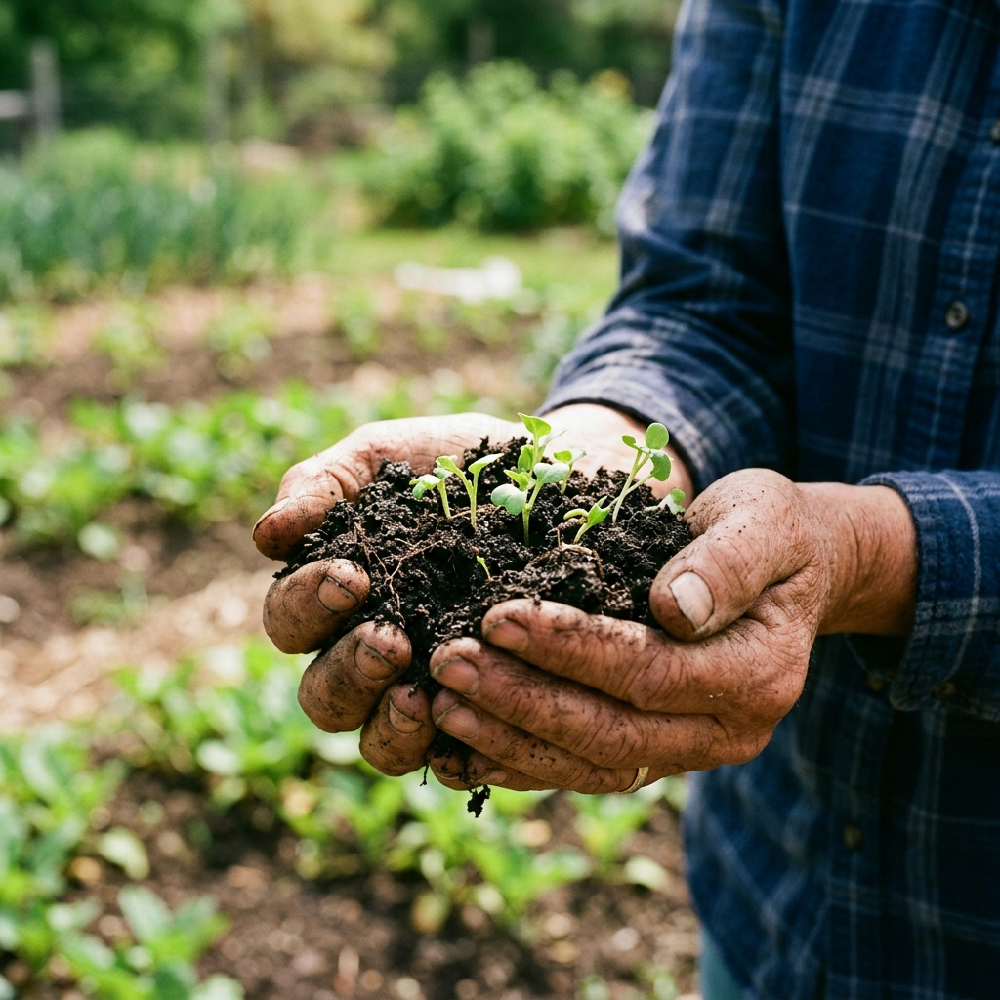

Elevating Egypt's agricultural yields through science-backed nutrient solutions and strategic investment in soil health.

We bridge the gap between global agricultural innovation and the unique soil profiles of the Nile Delta. Our mission is to empower farmers with the highest quality nutrients, ensuring every harvest reaches its maximum genetic potential while preserving the earth for future generations.
Tailored chemical and organic formulations designed to meet specific crop demands and regional soil requirements.
Enhancing soil fertility through natural microbial stimulation and long-term carbon sequestration.
High-efficiency, targeted nutrient delivery systems for rapid uptake and maximum crop yield output.
Personalized crop requirement analysis and bespoke blending for unique soil and climate conditions.